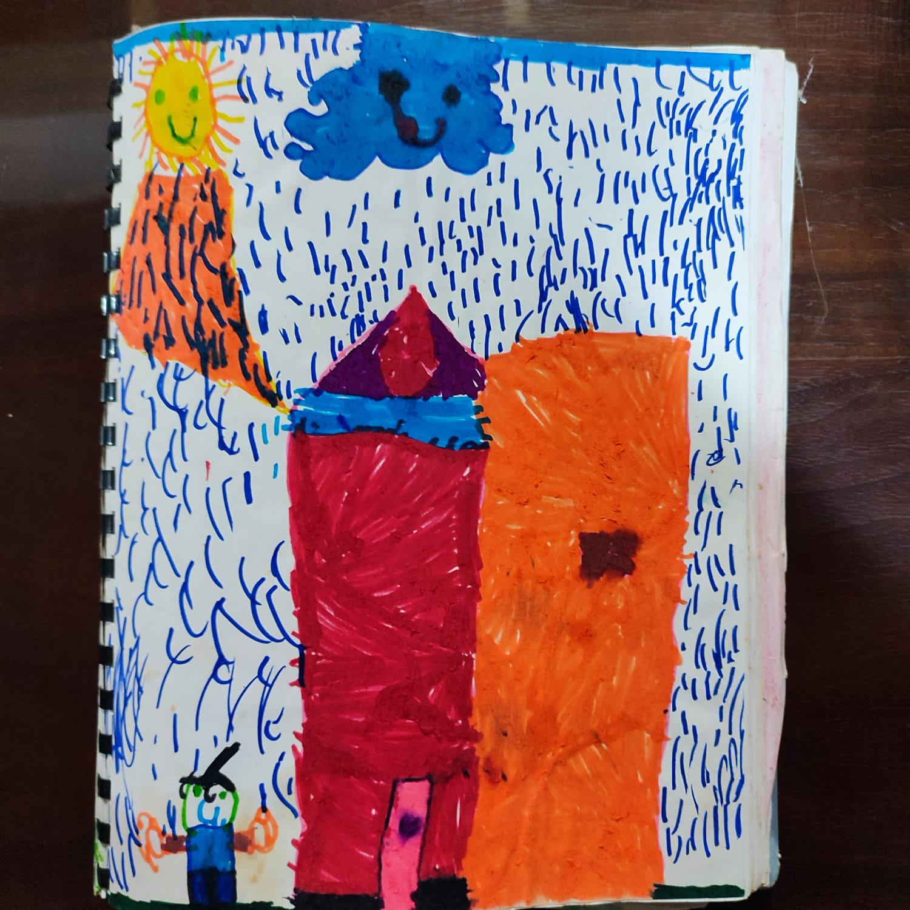

Have You Ever Seen The Rain
LANZAMIENTO: 26 DE MAYO DE 2023
El Concepto
John Fogerty compuso esta canción cuando su hermano Tom estaba a punto de dejar la banda en pleno éxito. Esa tensión inspiró una letra que refleja que, aunque todo parecía ir bien por fuera, había problemas graves dentro del grupo.
El contraste entre la música original —que suena feliz— y su verdadero significado, me impulsó a hacer mi propia versión. Quise acentuar esa melancolía tanto en la instrumentación como en la interpretación para transmitir la sensación real que se esconde detrás de la letra.
Proceso Creativo
Esta canción significa mucho para mí porque la escucho desde pequeño; a mi papá le gusta mucho y la recuerdo con nostalgia. Primero me la aprendí en el bajo y luego en la guitarra, así que grabarla me resultó natural porque ya la conocía bien.
Para mi versión, quise darle un ritmo más lento y una atmósfera sombría pero cálida en los coros; eso lo logré usando sintetizadores y varias cadenas de plugins. Aunque no recuerdo si la grabé antes o durante las sesiones de mi siguiente álbum, sé que el plan era sacarla dentro del siguiente álbum porque combinaba perfectamente con el concepto de lluvia.
El Arte Visual
Para la portada usé un dibujo que hice en el kínder donde dibujé la lluvia. Me pareció perfecto utilizarlo porque esta canción es una reimaginación de algo que me gustaba desde niño. Siento que logra combinar con el mensaje melancólico de la canción.